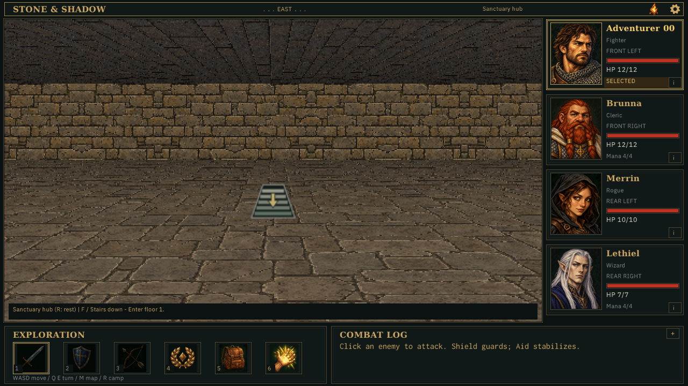
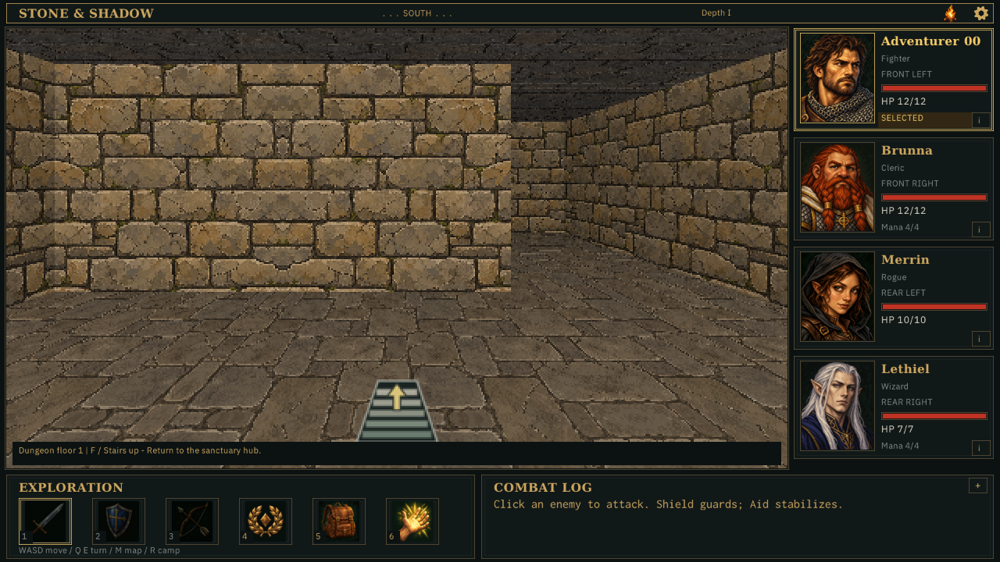
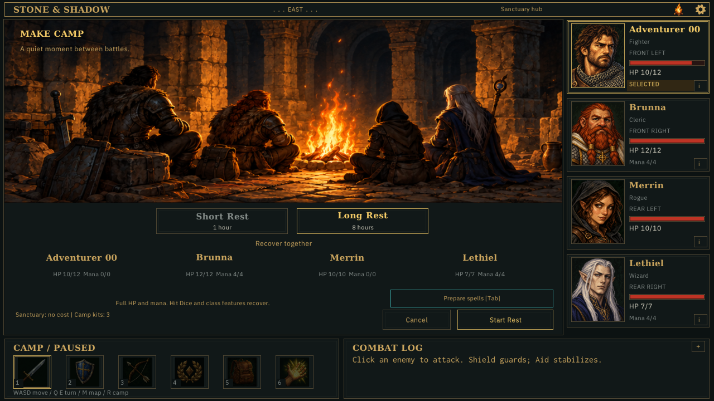
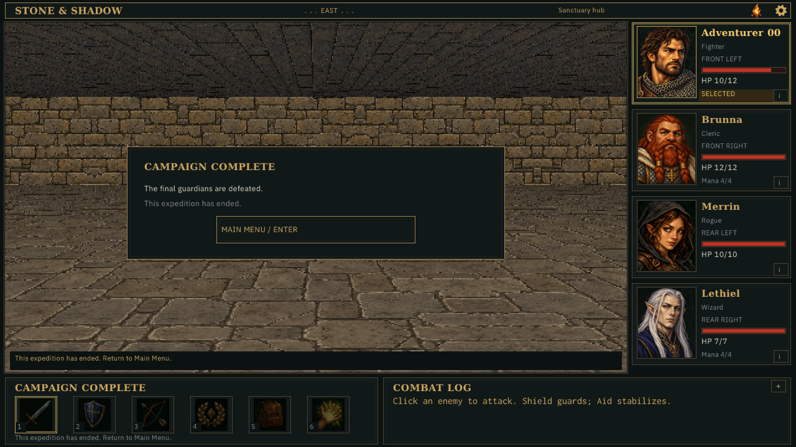
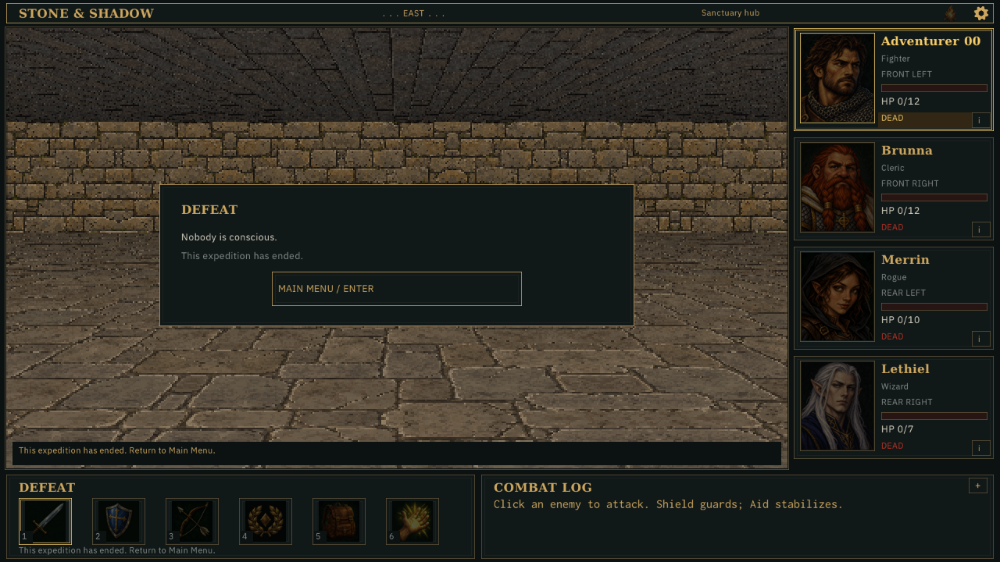

Seed 5. Hidden application-owned windows and in-process operations. The hub → floor 1 → hub sequence uses real checked travel. Recovery is a preview. Victory is an explicitly reconstructed HUD over the hub, not a fought expedition; owned CPU fixtures prove the final-guardian lifecycle. Defeat uses diagnostic authoritative party damage.
Verification and review recipe · Hashes and dimensions · Owned-fixture strict travel trace




